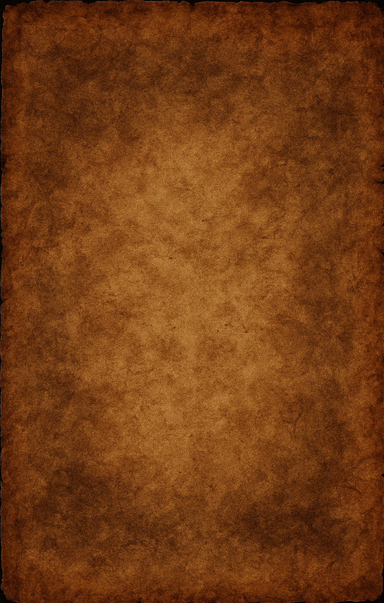

Espírito
4 Características
- Caça com 50% ou menos de sanidade média;
- Ataca com mínimo de 3 minutos após incensar o fantasma;
- Ataca com mínimo de 25sec sem incensar o fantasma;
- Piscada normal;
Poltergeist
6 Características
- Caça com 50% ou menos de sanidade média;
- Ataca com mínimo de 1:30min após incensar o fantasma;
- Ataca com mínimo de 25sec sem incensar o fantasma;
- Piscada normal;
- Habilidade de arremessar 2 objetos ao mesmo INSTANTE e/ou explosão de objetos;
- Único fantasma que dentro do cômodo com luz ACESSA tem habilidade arremessar objetos;
Wraith ou Espectro
6 Características
- Caça com 50% ou menos de sanidade média;
- Ataca com mínimo de 1:30min após incensar o fantasma;
- Ataca com mínimo de 25sec sem incensar o fantasma;
- Piscada normal;
- Único que da TP deixando EMF nível 2 com 33% de chance de deixar EMF nível 5;
- Único que não pisa no sal;
Phantom ou Aparição
6 Características
- Caça com 50% ou menos de sanidade média;
- Ataca com mínimo de 1:30min após incensar o fantasma;
- Ataca com mínimo de 25sec sem incensar o fantasma;
- Piscada demorada / menos visível;
- Segue em qualquer lugar do mapa e deixa EMF nível 2 ao chegar perto
- Desaparece ao tirar foto;
Banshee
8 Características
- Ataca com 50% ou menos de sanidade do player alvo;
- Ataca com mínimo de 1:30min após incensar o fantasma;
- Ataca com mínimo de 25sec sem incensar o fantasma;
- Piscada normal;
- Ao atacar, ela tem um alvo único;
- Grita no microfone direcional e/ou gravador de som;
- Não deixa EMF ao terminar de seguir o jogador;
- Faz roaming entre andares, porém jamais vai atrás do seu alvo, caso ele esteja em outro andar;
Jinn
7 Características
- Caça com 50% ou menos de sanidade média;
- Ataca com mínimo de 1:30min após incensar o fantasma;
- Ataca com mínimo de 25sec sem incensar o fantasma;
- Piscada normal;
- Único que não desliga quadro de energia, porém pode sobrecarregar e assim desligando;
- Quadro de luz ligado, na linha de visão do jogador e + de 3 metros de distancia, sua velocidade será fixada em 2.5 m/s;
- Ao ligar o quadro de luz, drena 25% da sanidade do player próximo ao quadro de luz e deixa rastro de EMF;
Mare
7 Características
- Com 40% ou menos de sanidade, ataca independente da condição;
- Entre 40 e 60% de sanidade media, pode atacar em cômodos que esteja com a luz desligada;
- Ataca com mínimo de 1:30min após incensar o fantasma;
- Ataca com mínimo de 25sec sem incensar o fantasma;
- Piscada normal;
- Nunca irá ligar fonte de luz porém é capaz de ligar o quadro de luz;
- Grande chance de desligar o interruptor instantaneamente após o jogador ligar, sendo necessário aguardar 10 segundos para testar novamente;
Revenant
7 Características
- Caça com 50% ou menos de sanidade média;
- Ataca com mínimo de 1:30min após incensar o fantasma;
- Ataca com mínimo de 25sec sem incensar o fantasma;
- Piscada normal
- Caso não esteja vendo ou sentindo o jogador no ataca, se move à 1 m/s;
- Caso esteja vendo ou sentindo o jogador, se move à 3 m/s;
- Ao usar o incenso Tier 2 no fantasma quando ataca, começa a se mover EXTREMAMENTE lento.
Shade
6 Características
- Caça com 35% ou menos de sanidade média;
- Ataca com mínimo de 1:30min após incensar o fantasma;
- Ataca com mínimo de 25sec sem incensar o fantasma;
- Piscada normal;
- Caso o jogador esteja na mesma sala que o fantasma, ele não irá fazer eventos;
- Maior probabilidade de fazer eventos e aparições em sombra caso use objetos amaldiçoados;
Demon ou Demônio
6 Características
- Caça com 70% ou menos de sanidade média;
- Habilidade de atacar com qualquer % de sanidade;
- Ataca com mínimo de 1min após incensar o fantasma;
- Capacidade da caçar com mínimo de 20sec sem incensar;
- Piscada normal;
- Aumenta em 50% o tamanho do crucifixo;
Yurei
7 Características
- Caça com 50% ou menos de sanidade média;
- Ataca com mínimo de 1:30min após incensar o fantasma;
- Ataca com mínimo de 25sec sem incensar o fantasma;
- Piscada normal;
- Incensar o fantasma faz ele ficar preso na sala favorita por 1:30min;
- Faz toque duplo na porta, drenando 15% de sanidade caso esteja em um raio de 7.5 metros;
- Único que faz interação com a porta de entrada, sem deixar digital;
Oni
7 Características
- Caça com 50% ou menos de sanidade média;
- Ataca com mínimo de 1:30min após incensar o fantasma;
- Ataca com mínimo de 25sec sem incensar o fantasma;
- Piscada lenta, dando para ver praticamente todo o momento durante o ataque;
- Não produz Airball durante a partida;
- Muito ativo em relação à aparições;
- Drena 20% de sanidade caso algum evento encoste no jogador;
Yokai
6 Características
- Caça com 50% ou menos de sanidade média;
- Pode caçar entre 50% e 80% de sanidade se alguém falar a menos de 2.5m do fantasma;
- Ataca com mínimo de 1:30min após incensar o fantasma;
- Ataca com mínimo de 25sec sem incensar o fantasma;
- Piscada normal;
- Só escuta o jogador em um raio de 2.5 metros;
Hantu
8 Características
- Caça com 50% ou menos de sanidade média;
- Ataca com mínimo de 1:30min após incensar o fantasma;
- Ataca com mínimo de 25sec sem incensar o fantasma;
- Piscada normal;
- Possui Temperatura Congelando como evidência obrigatória;
- Não é capaz de ligar quadro de luz, e tendo 2x chances mais de desligar;
- Caso o quadro de luz esteja desligado ou quebrado, o fantasma irá soltar uma baforada no ataque;
- Sua velocidade será baseada na temperatura ambiente, quanto mais gelado o cômodo, mais rapido ele será;
Goryo
8 Características
- Caça com 50% ou menos de sanidade média;
- Ataca com mínimo de 1:30min após incensar o fantasma;
- Ataca com mínimo de 25sec sem incensar o fantasma;
- Piscada normal;
- Possui Projetor D.O.T.S como evidência obrigatória;
- Não irá aparecer no Projetor D.O.T.S a olho nu, somente pela câmera com o jogador fora de sua sala favorita ou dentro do caminhão;
- Maior tendência em aparecer no Projetor D.O.T.S;
- Naturalmente ele jamais mudará sua sala favorita;
Myling
7 Características
- Caça com 50% ou menos de sanidade média;
- Ataca com mínimo de 1:30min após incensar o fantasma;
- Ataca com mínimo de 25sec sem incensar o fantasma;
- Piscada normal;
- Seus passos são escutados em um raio de 12 metros;
- O volume dos passos são ligeiramente abafado perto do limite, e se torna mais perceptível quando se aproxima;
- É mais frequente no microfone direcional;
Onryo
6 Características
- Caça com 60% ou menos de sanidade média;
- Caso apague 3 formas de fogo, ele irá atacar independente da % de sanidade;
- Ataca com mínimo de 1:30min após incensar o fantasma;
- Ataca com mínimo de 25sec sem incensar o fantasma;
- Piscada normal;
- Habilidade de apagar a mesma forma de fogo em um período de 20 segundos;
Twins ou Os Gêmeos
7 Características
- Caça com 50% ou menos de sanidade média;
- Ataca com mínimo de 1:30min após incensar o fantasma;
- Ataca com mínimo de 25sec sem incensar o fantasma;
- Piscada normal;
- Habilidade de ignorar crucifixo e iniciar um ataque;
- Faz interação dupla quase ao mesmo tempo;
- Os passos durante o começo do ataque podem ser de 1.53 m/s ou 1.87 m/s, ou seja, 10% mais lento ou 10% mais rapido que o normal;
Raiju
7 Características
- Caça com 50% ou menos de sanidade média;
- Habilidade de caçar entre 50 e 65% de sanidade caso tenha eletrônico próximo ao fantasma;
- Ataca com mínimo de 1:30min após incensar o fantasma;
- Ataca com mínimo de 25sec sem incensar o fantasma;
- Piscada normal;
- Caso tenha eletrônico próximo durante o ataque, seus passos irão para 2.5m/s instantaneamente;
- Seu raio de interferência no rádio global é de 15 metros;
Obake
9 Características
- Caça com 50% ou menos de sanidade média;
- Ataca com mínimo de 1:30min após incensar o fantasma;
- Ataca com mínimo de 25sec sem incensar o fantasma;
- Piscada normal;
- Possui Ultravioleta como evidência obrigatória;
- Naturalmente tem 25% de chance de esconder sua digital;
- Tem probabilidade de deixar 6 dedos ao verificar a digital com ultravioleta;
- Tem probabilidade de deixar 2 digitais em interruptores e 5 digitais em teclados ou portas de cela de prisão;
- Muda sua forma corporal durante o ataque, somente mudanças do mesmo sexo e mudanças específicas;
Mímico
7 Características
- Caça com qualquer % de sanidade;
- Ataca com mínimo de 1min após incensar o fantasma;
- Ataca com mínimo de 20sec sem incensar o fantasma;
- Possui qualquer piscada, dependendo de qual irá imitar;
- Possui qualquer tipo de passo, dependendo de qual irá imitar;
- Sempre irá ter Orb Fantasma em sua sala favorita;
- Capaz de imitar tudo, exceto outras evidências que não sejam a do próprio Mímico;
Moroi
9 Características
- Caça com 50% ou menos de sanidade média;
- Ataca com mínimo de 1:30min após incensar o fantasma;
- Ataca com mínimo de 25sec sem incensar o fantasma;
- Piscada normal;
- Possui Spirit Box como evidência obrigatória;
- Seus passos irão variar de 1.5 m/s até 3.71 m/s, quanto menor a % de sanidade média geral, mais rápido ele será;
- Possui hiperosmia, ou seja, irá demorar 7 segundos para acabar o efeito do incenso Tier 2;
- Habilidade de amaldiçoar o jogador caso escute ele pelo Spirit Box, Microfone Direcional ou Gravador de Som, drenando a sanidade mais rápido;
- Caso o jogador esteja amaldiçoado, o rémedio de sanidade irá retirar a maldição;
Deogen
8 Características
- Caça com 40% ou menos de sanidade média;
- Ataca com mínimo de 1:30min após incensar o fantasma;
- Ataca com mínimo de 25sec sem incensar o fantasma;
- Piscada lenta, semelhante, mas não igual ao Oni;
- Possui Spirit Box como evidência obrigatória;
- Seus passos variam de 3 m/s à 0.4 m/s dependendo da distância entre o fantasma e o jogador, quanto mais perto, mais lento;
- Sempre irá saber aonde o jogador está durante o ataque, sendo impossível se esconder dele;
- Ao utilizar Spirit box e dentro de um raio de 1 metro, há 33% de chance de emitir um som ofegante;
Thaye
7 Características
- Caça com 75% ou menos de sanidade média;
- Ataca com mínimo de 1:30min após incensar o fantasma;
- Ataca com mínimo de 25sec sem incensar o fantasma;
- Piscada normal;
- Passos viram de 1 m/s à 2.75 m/s, dependendo de sua idade, quanto mais velho o fantasma, mais lento ele será;
- Único fantasma que irá envelhecer ao decorrer da partida, utilizando Tabuleito OUIJA será facil de descobrir;
- Durante o mesmo ataque, ele jamais irá acelerar;